1 配置体系总览（L0–L4）
风格配置采用五级可回退体系，前台渲染时从下往上逐级深合并，缺失配置自动回退到下一层，保证任何情况下都能渲染。详见第 8 节速查表。
| 层级 | 名称 | 存放位置 | 后台入口 | 说明 |
|---|---|---|---|---|
| L0 | 全局默认 | 前端代码内建 | — | 兜底链最底层，代码内建占位 |
| L1 | 全局配置 | ShopGlobalConfig（按 app） | 平台 → 全局配置 | 该端所有店铺的底层兜底 |
| L2 | 风格模板 | ShopTemplate（按 app） | 平台 → 风格模板库 | 店铺选择后整体生效 |
| L3 | 店铺覆盖 | Channel customFields（templateId + themeTokensOverride） | 店铺 → 主题风格 | 选模板 + 店铺级令牌覆盖（主色/辅色/圆角） |
| L4 | 页面/模块 | Channel customFields | 店铺 → 页面装修 | 详情页块级样式、分类/购物车/我的页配置 |
双端隔离
模板与全局配置均带 app 字段（nshop / vshop）。C 端按自身端取配置，店铺引用的模板跨端或已停用时会自动回退，避免前台拿到不可用配置。
2 风格模板库（平台）
入口：平台 → 风格模板库。管理平台级风格模板，支持增删改查、复制、启用/停用，双端共用同一列表（按 tab 筛选）。
2.1 操作步骤
- 新建模板：右上角「＋新建模板」→ 填名称、选目标端（nshop/vshop，创建后不可改）、可编辑
theme/pagesJSON → 保存。 - 编辑：点击模板行 → 修改名称 / theme / pages / 启用状态 → 保存。
- 复制：点击「复制」→ 生成「原名称 副本」，版本号 +1。
- 删除：点击「删除」→ 移除模板（被店铺引用时 C 端自动回退，不影响前台稳定性）。
- 启用/停用：行内开关；停用后 C 端不再使用该模板。
2.2 配置字段
| 字段 | 说明 | 示例 |
|---|---|---|
theme | 模板级主题令牌：主色 / 辅色 / 圆角等 | {"primaryColor":"#ff6600","accentColor":"#fff3e6","radius":8} |
pages | 页面级默认配置：product / home / category / cart / profile | {"product":{"layout":"classic","blocks":{}},"home":{"sections":[]}} |
3 全局配置（平台 · L1）
入口：平台 → 全局配置。配置某端所有店铺的底层兜底：未配置模板 / 店铺覆盖时生效。
3.1 操作步骤
- 切到目标端（nshop 商城 / vshop 商城）。
- 主题令牌 themeTokens：主色 primaryColor、辅色 accentColor、圆角 radius。
- 各页默认配置 defaults JSON：与模板 pages 同构，作为 L1 兜底。
- 点「保存」写入 ShopGlobalConfig（无记录自动创建）。
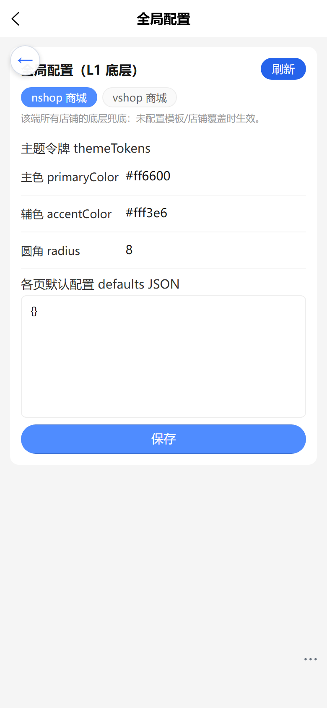
4 店铺选模板
入口：店铺 → 店铺信息 →「风格模板」区。店铺选择某个启用中的模板整体生效，未选时回退全局默认。
入口已迁移（2026-09-20 起）
店铺选模板已迁移到 店铺 → 主题风格（见第 8 节），与「令牌覆盖」「合并结果预览」同页；本页（店铺信息）不再出现模板选择，保存店铺信息也不会再覆盖 templateId。下方截图保留作为历史对照。
4.1 操作步骤
- 「不使用模板」= 全局默认（不引用任何模板）。
- 点击模板卡片（橙色高亮 + ✓ 表示选中）→ 点底部「保存」。
- 保存后
templateId写入店铺 customFields；前台按该 id 取模板。
注意
本地开发为单 Vendure 实例，模板列表会同时出现 nshop/vshop 同名模板（卡片带端标签区分）；生产环境两端独立实例，各端仅显示本端模板。
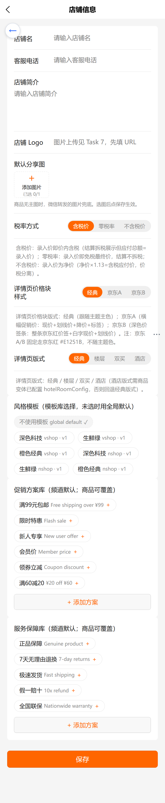
5 页面装修
入口：店铺 → 装修 下各页面表单，保存到店铺 customFields，逐级覆盖模板 / 全局默认。
5.1 详情页装修
- 页面版式：经典 / 楼层 / 双买 / 酒店（缺省或非法回退「经典」）。
- 功能块：图集、商品信息、价格、促销、服务保障、购买条、变体、评价、描述等 14 块，可独立显隐 + style JSON 定制。
- 保存到
detailConfig（含 blocks.price.style 价格块版式 classic/jdA/jdB）。
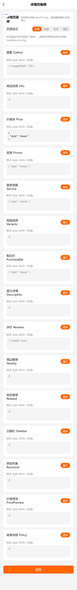
5.2 分类 / 购物车 / 我的
| 页面 | 字段 | 保存到 |
|---|---|---|
| 分类页 | 标题、副标题、背景色、列表样式（网格/列表）、楼层标题/副标题 | pageCategoryConfig |
| 购物车页 | 标题、推荐区显隐、结算按钮样式（经典/通栏） | pageCartConfig |
| 我的页 | 头像样式（圆形/圆角方形）、菜单项列表（icon/标题/链接） | pageProfileConfig |
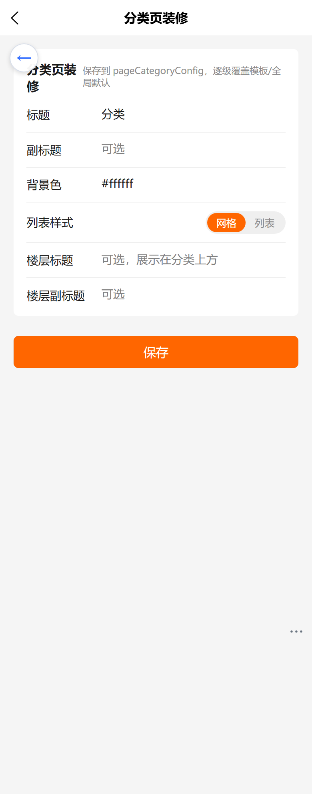
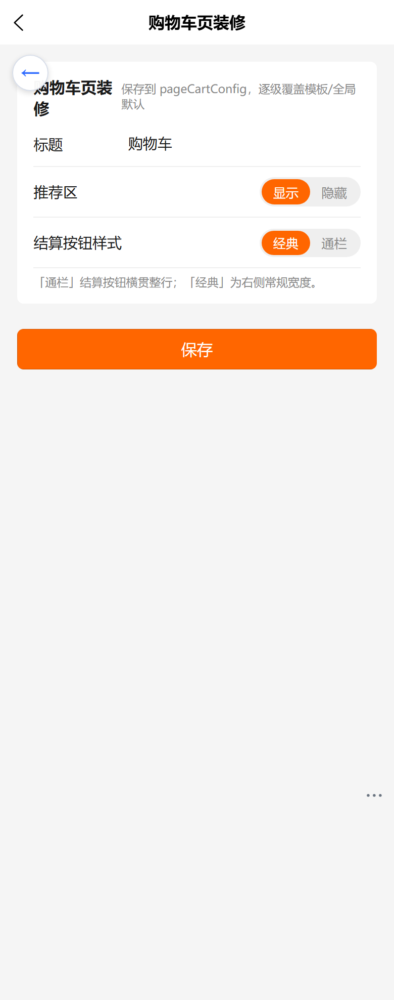
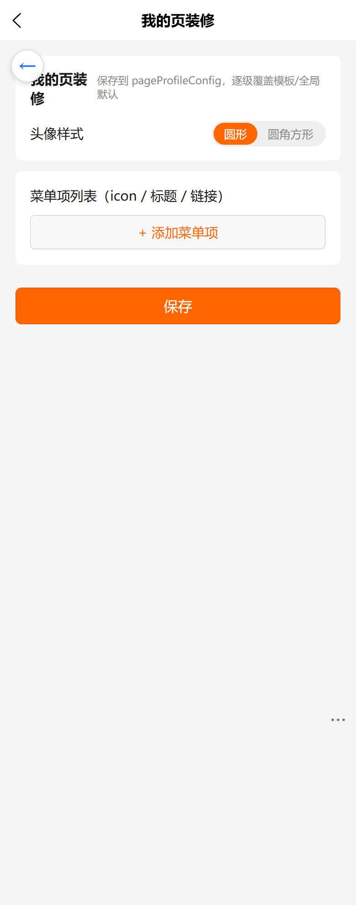
6 生效层级与回退规则
前台合并顺序（前端纯函数实现，SSR 友好）：
L0 全局默认 → L1 全局配置 → L2 风格模板 → L3 店铺覆盖 → L4 页面/模块
- 深合并：上层字段覆盖下层同名字段，未覆盖字段保留下层值。
- 回退：任一环节缺省 / 非法（坏 JSON、跨端、停用模板）→ 自动落到下一层。
- 模板引用校验：C 端
shopTemplate(app, id)校验模板属于该端且启用，否则返回 null 走默认。 - 文案兜底：当前 locale → defaultLocale → 首个值 → 内建占位 → i18n 字典。
8 主题风格页与五级体系（L0–L4）
本节为 2026-09-20「主题风格体系联通」批次的落点：新增 L3 令牌层；把「店铺选模板」收敛到 主题风格页（唯一风格入口）；模板库 / 全局配置改为 结构化表单（不改 JSON 也能配置）；存量 themeId 提供 一键迁移。
8.1 五级回退链速查表
| 层级 | 名称 | 存放位置 | 后台入口 | 回退语义 |
|---|---|---|---|---|
| L0 | 内建默认 | 前端代码常量 | — | 兜底链最底层（如 --brand-color: #ff6600） |
| L1 | 全局配置 | ShopGlobalConfig（按 app） | 平台 → 全局配置 | 该端所有店铺的底层兜底 |
| L2 | 风格模板 | ShopTemplate（按 app） | 平台 → 风格模板库 | 模板未引用 / 已停用 / 跨端 → 返回 null，退到 L1 |
| L3 | 店铺覆盖令牌 | Channel.customFields.themeTokensOverride（JSON 文本） | 店铺 → 主题风格 | last-wins，只覆盖显式给出的键，其余回退 L2 → L1 |
| L4 | 页面 / 模块 | Channel.customFields（detailConfig 等） | 店铺 → 装修 | 页面级 / 块级样式，缺省回退上一级 |
合并顺序：mergeThemeTokens(L1 全局 themeTokens) ← L2 模板（palette 预设展开 + 显式 theme） ← L3 themeTokensOverride。优先级 L1 < L2 palette < L3，逐级深合并；数组 / 标量直接覆盖，null 跳过。
L3 的实际读取路径（排障要点）
C 端读取 L3 令牌走 activeChannel.customFields.themeTokensOverride。resolveChannelByCode 的类型 ChannelResolveCustomFields 不暴露该字段，查询它会导致整个店铺引导请求 400，进而使渠道 token 回落默认值、主题全量退回 L0。若 C 端出现「整站主题恒为默认色」，先查此处。
8.2 主题风格页（店铺 → 主题风格）六段结构
| # | 区块 | 作用 |
|---|---|---|
| 1 | 目标端分段器（nshop 商城 / vshop 商城） | 切换配置目标端；模板列表按 app 过滤 |
| 2 | 当前生效摘要卡 | 色块 + 模板名 + 生效主色 + 来源徽标（L1/L2/L3） |
| 3 | 风格模板卡片网格 | 「不引用模板」+ 该端启用中的模板；选中态描边 + ✓ |
| 4 | 令牌覆盖（可选） | 主色 / 辅色 / 圆角；留空即不覆盖，仅存增量差异 |
| 5 | 旧版主题提示条 | 检测到旧版 themeId 时出现 → 一键迁移为 L3 令牌 |
| 6 | 合并结果预览（真实生效值） | 逐 key 展示合并后的真实值与来源徽标；点「刷新预览」重算 |
底部「保存主题」一次性写回 templateId 与 themeTokensOverride（两个字段都为空的项写 null，即清空）。

#1a1a1a，徽标 L2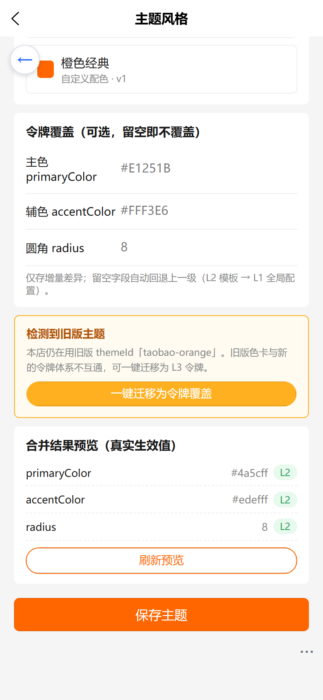
#4a5cff，徽标 L2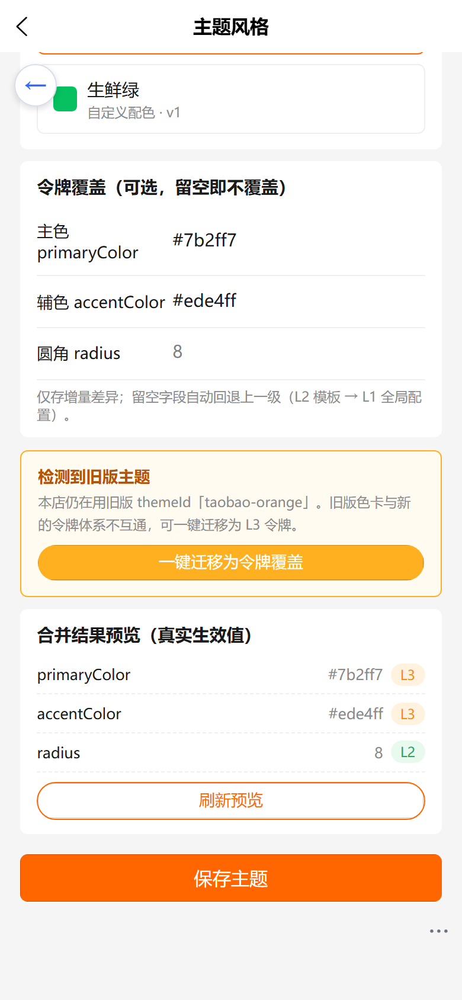
#7b2ff7 → 摘要卡徽标变 L3（覆盖 L2）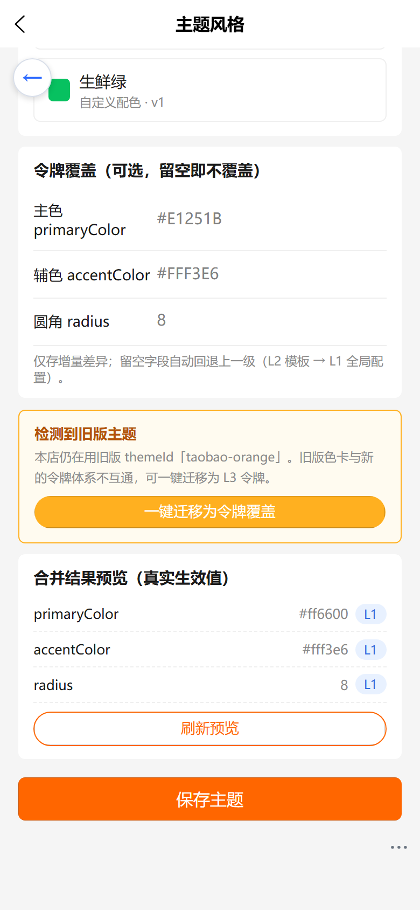
#ff6600，徽标 L1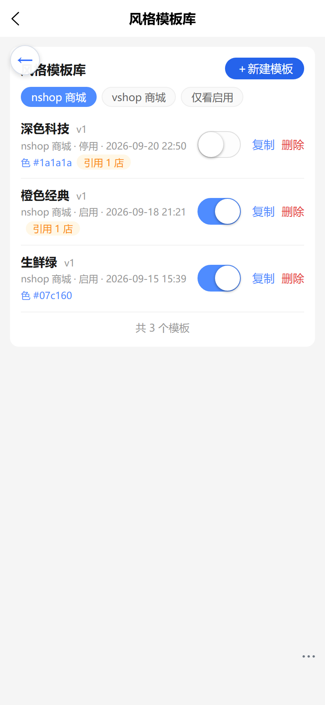
8.3 端到端验收对照表（2026-09-21 实测）
验收渠道：测试渠道 t2（二月兰会员）；C 端为本地渲染（nshop :8080 / vshop :5180），对线上正式站零影响。
| # | 验收项 | 后台操作 | C 端首帧实测值 | 截图 |
|---|---|---|---|---|
| 1 | 选模板 → C 端首帧即变 | 主题风格页选「学域墨蓝」/「深色科技」并保存 | vshop #4a5cff；nshop #1a1a1a | theme-unify-01-* |
| 2 | L3 令牌主色生效 + 徽标 L3 | 令牌覆盖主色 #7b2ff7、辅色 #ede4ff | rgb(123, 47, 247)（覆盖 L2 的 #1a1a1a） | theme-unify-02* |
| 3 | 不引用模板 → 回退 L1，不空白不错色 | 选「不引用模板」+ 清空三格令牌 | rgb(255, 102, 0) = L1 | theme-unify-03* |
| 4 | 跨端 / 停用模板 → 回退 L1 | ① nshop 引用 vshop 模板；② 模板库停用被引用模板 | 两种情形均为 rgb(255, 102, 0) | theme-unify-04* |
| 5 | 存量 themeId 迁移前不回归、迁移后令牌生效 | 「一键迁移为令牌覆盖」 | 迁移前照常渲染 L2；迁移后 rgb(255, 80, 0)（taobao-orange → #FF5000） | theme-unify-05* |
| 6 | 不改 JSON 完成「建模板 → 选配色 → 选版式 → 保存 → 预览」 | 模板库「＋新建模板」 | 预览 merged 全部来自 L2 模板 | theme-unify-06* |
| 7 | 店铺信息页不再出现模板选择；两页不互相覆盖 templateId | 店铺信息页保存 | 页面无「模板」字样；templateId 3 → 3 未变 | theme-unify-07* |
结论
7 项全部通过，C 端控制台零报错；验收后渠道配置已 restore 还原为 templateId=1 / themeId=taobao-orange / override=null。全部截图均为手机视口 390×844、dpr=2（780×1688 px）。
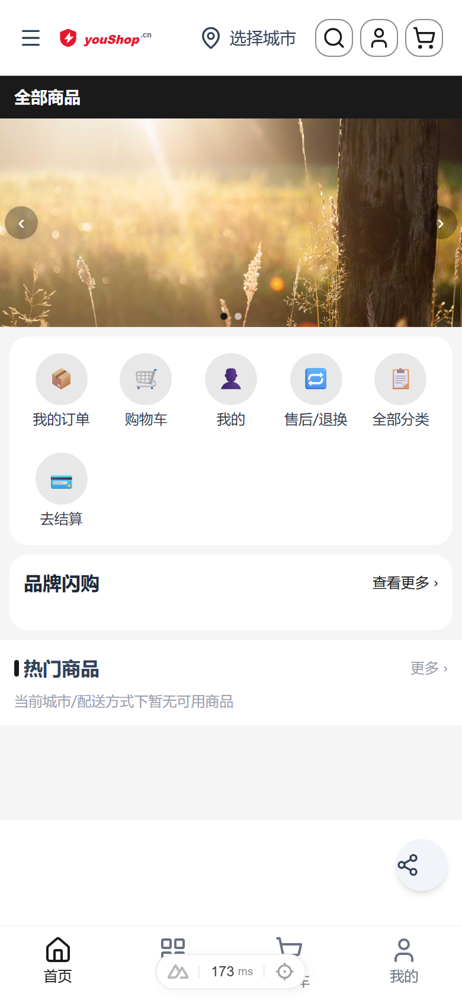
#1a1a1a）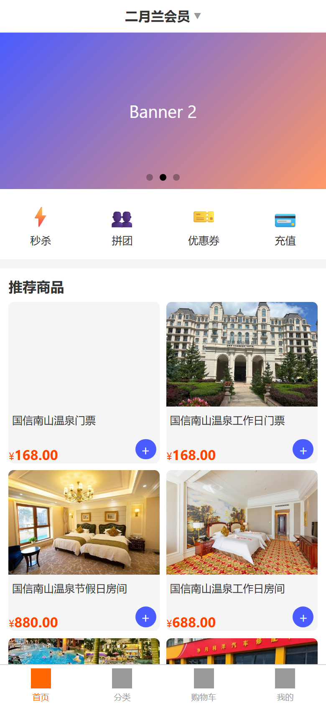
#4a5cff）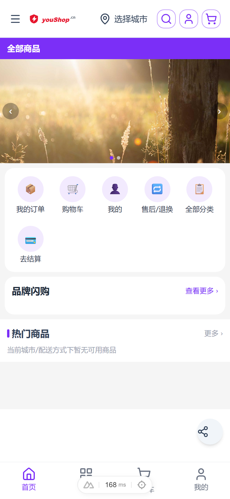
#7b2ff7）#ff6600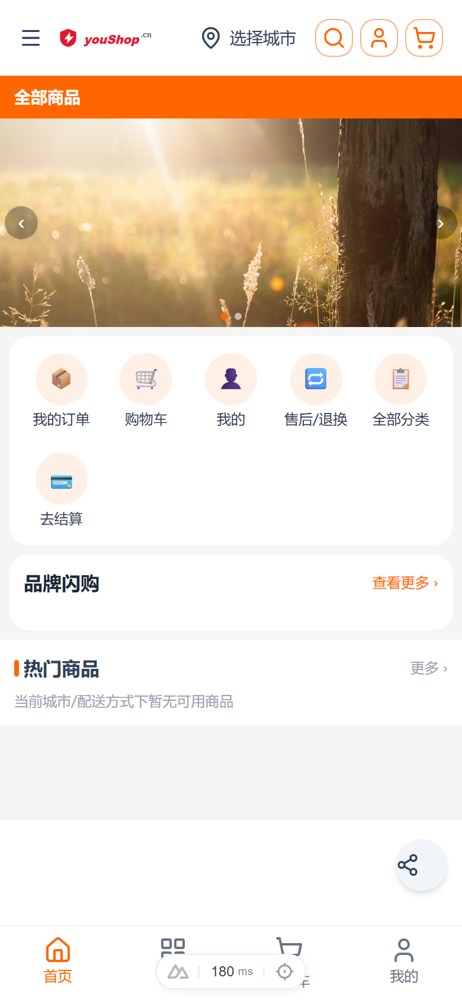
#FF5000 生效8.4 旧版 themeId 一键迁移
themeId 为只读兼容字段：C 端已不再按它切色卡，仅用于后台识别存量店铺。主题风格页检测到旧版 id 时出现黄色提示条。
| 旧 themeId | 迁移为 L3 令牌 |
|---|---|
taobao-orange | {"primaryColor":"#FF5000","radius":8} |
jd-red | {"primaryColor":"#E1251B","radius":6} |
modern-minimal | {"primaryColor":"#111827","radius":6} |
| 其余（brand / default / 空） | 不产生覆盖，仅清空 themeId |
操作步骤
- 进入
店铺 → 主题风格，确认出现「检测到旧版主题」提示条。 - 点「一键迁移为令牌覆盖」→ 弹窗预览将写入的令牌 → 确认。
- 完成后
themeId置空、令牌覆盖三段自动填好，提示条消失；合并结果预览的primaryColor来源徽标变 L3。 - 点「保存主题」（迁移本身已写库；若又调整过令牌需再保存一次）。
注意
迁移会同时把 themeId 置空。此操作不可在界面上撤销，迁移前请确认合并结果预览的主色符合预期。
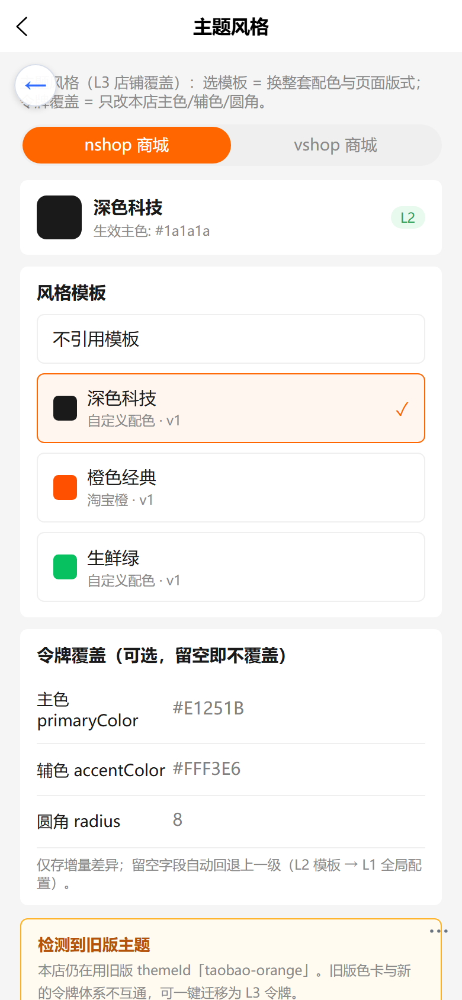
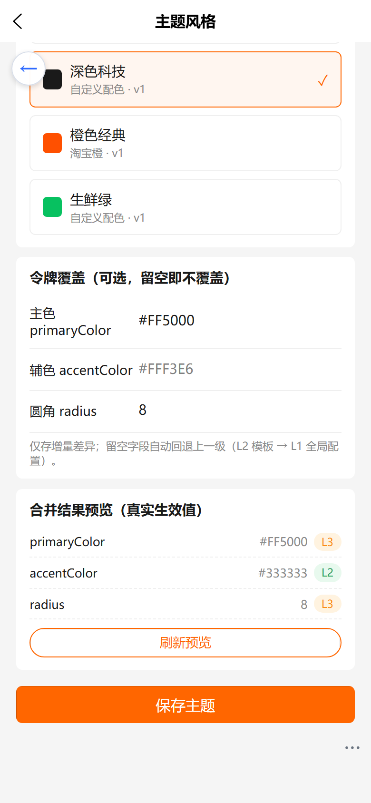
8.5 模板库 / 全局配置结构化表单
入口 平台 → 风格模板库，点「＋新建模板」或点击列表项。整个流程无需编辑任何 JSON。
操作步骤
- 新建模板：填模板名 → 选目标端（nshop / vshop，创建后不可改）→ 开关控制启用。
- 选配色方案：点预设色卡（不指定 / 晨曦金 / 京东红 / 淘宝橙 / 拼多多红 / 唯品会蓝紫 / 科技蓝 / 清雅绿 / 极夜黑）自动带出主色 / 辅色 / 圆角；也可手填覆盖。
- 选页面与版式：勾选适用页面（商品详情 / 首页 / 分类 / 购物车 / 我的），商品详情再选版式（经典 / 楼层 / 双通道），并按需开关功能块。
- 保存：写入
ShopTemplate并自增版本号。 - 预览：点开模板 →「合并预览」tab → 选预览端与覆盖场景（无覆盖 = 仅 L1+L2；或输入覆盖 JSON 模拟 L3）→「生成合并预览」→ 逐 key 查看合并结果与来源徽标。
配色预设的权威副本
配色预设（palettePresets）由后端 shop-template-plugin 提供权威定义，C 端 nshop / vshop 各自内建同构副本用于 SSR 与离线渲染，web-admin 通过 templateApi.palettePresets() 拉取。新增 / 修改配色时需三处同步（后端 + nshop + vshop），否则 C 端与后台预览会出现色差。
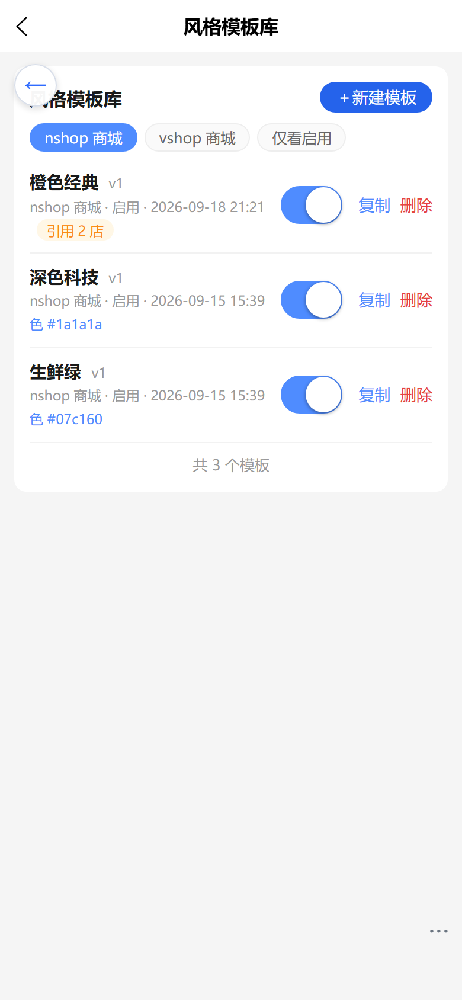
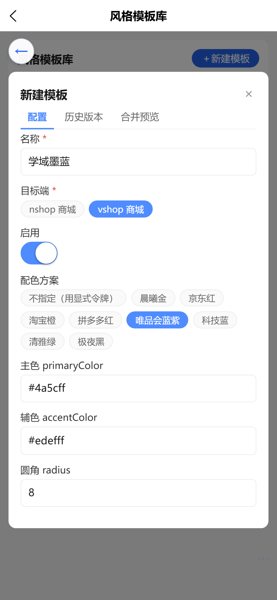
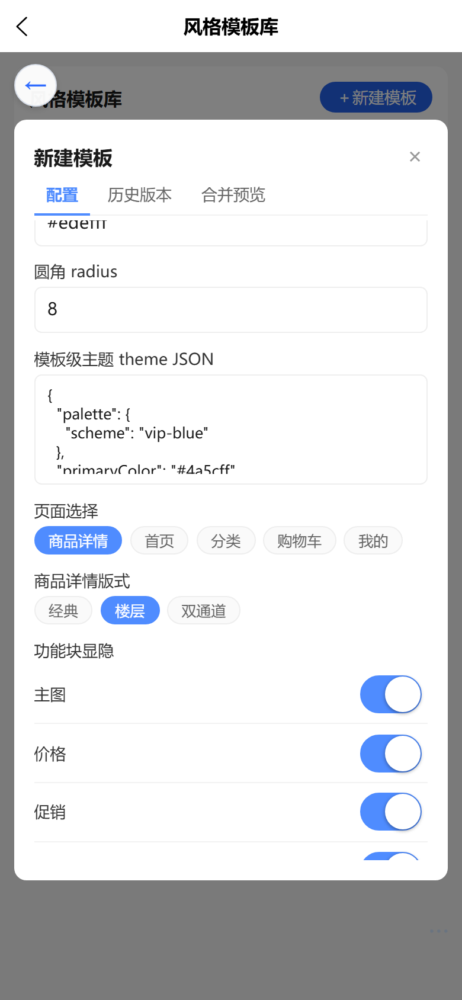
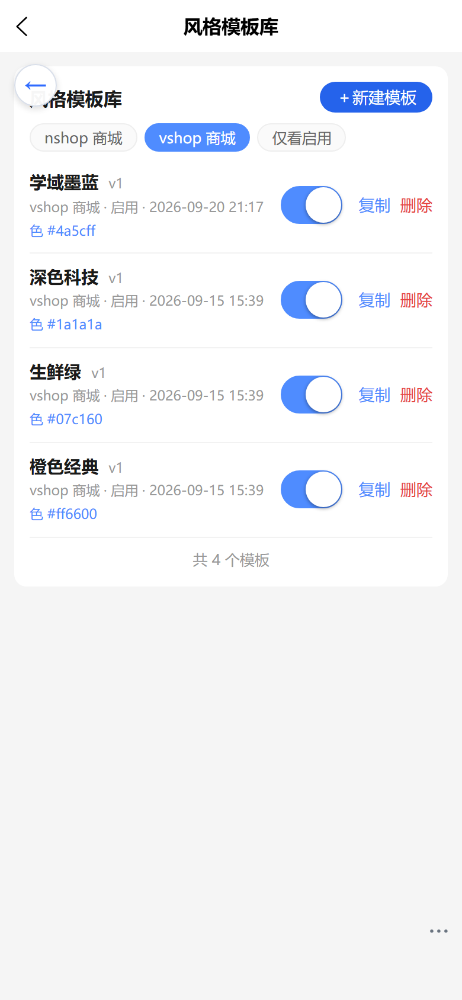
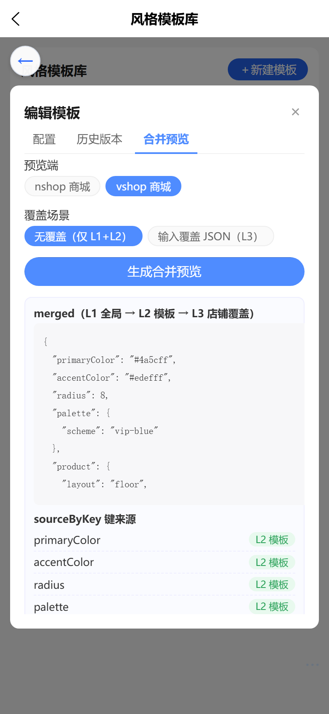
merged 与 sourceByKey 徽标（全部 L2 模板）
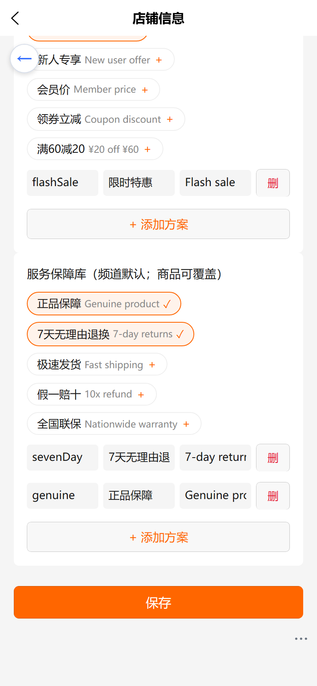
templateId 未被覆盖9 验证与回归
9.1 API 冒烟
- C 端：
shopTemplate(app, id?)、shopGlobalConfig(app)（公开查询）。 - 管理端：
shopTemplates/createShopTemplate/updateShopTemplate/deleteShopTemplate/copyShopTemplate/shopGlobalConfig/updateShopGlobalConfig（需 ShopTemplates 权限）。
9.2 权限说明
插件在启动时向 authOptions.customPermissions 注册 4 个权限（Read/Create/Update/Delete），持有 SuperAdmin 权限的角色（如 super-admin）自动放行全部操作。
租户管理员看不到模板
租户管理员默认没有 ShopTemplatesRead，主题风格页的模板列表与「合并结果预览」会因 FORBIDDEN 而静默为空。排查时请先用 superadmin 复核。
9.3 回归截图
第 8 节的 22 张手机视口截图（390×844、dpr=2）即本批次回归证据，覆盖主题风格页六段结构、五级回退链 7 条验收项、模板库结构化表单与旧 themeId 迁移；其它章节截图覆盖模板库、全局配置、店铺选模板、四类页面装修表单。
交付核对
模板库种子数据 3 套 × 双端（橙色经典 / 生鲜绿 / 深色科技）+ 全局配置各 1 条已幂等写入；店铺选模板保存/持久化闭环已验证（templateId 写回 Channel）。
9.4 回归结果（2026-09-21）
仓库无 scripts/e2e-theme.mjs，故以「第 8.3 节 7 条手工验收 + 22 张手机截图 + 18 项 API 冒烟」作为回归证据。API 冒烟覆盖：配色预设 8 套、模板库双端过滤、L1 全局配置、合并预览四级优先级（L1 / L2 / L3 last-wins / 未覆盖键回退）、C 端 shopTemplate 跨端返回 null、C 端 activeChannel 暴露 L3 字段。结果 18 / 18 通过。
已知限制（本批次未修，记录备查）
后台「合并预览」（templateMergedPreview）只按给定 templateId 展开 L2，不校验模板的 app 与 enabled；而 C 端 shopTemplate 会校验并在跨端 / 停用时返回 null。因此当店铺 templateId 指向跨端或已停用模板时，后台预览会显示 L2 配色，而 C 端实际回退 L1。判定以 C 端实机为准（主题风格页的模板卡片列表本身已按端过滤，正常操作不会选到跨端模板）。